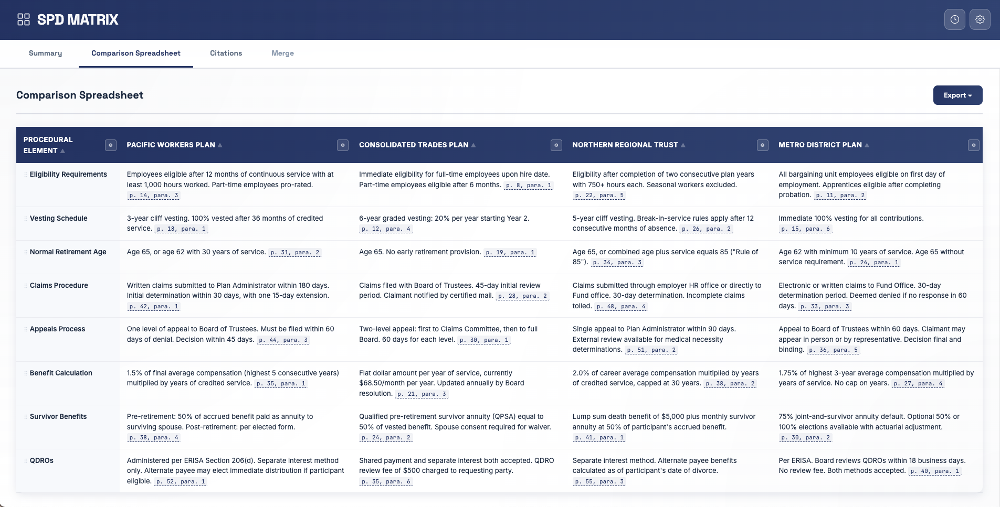

After a merger, you inherit plans. Sometimes five. Sometimes fifteen. Each with its own governing language on claims, appeals, vesting, eligibility, and more. Finding where plans agree and where they conflict requires reading every page of every document.
SPD Matrix compares plans, contracts, and governing documents side by side, extracts the governing language for each provision, and cites the exact page and paragraph. A comparison that used to take weeks takes minutes.
